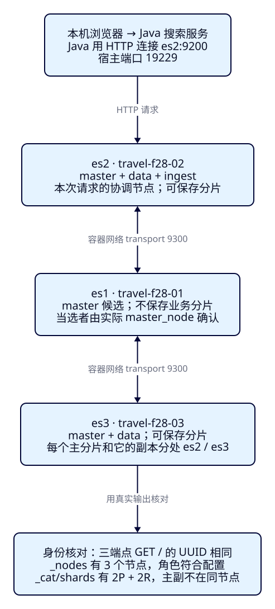
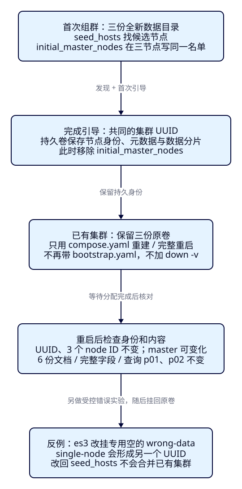

三个节点，
真是一个集群吗？
到F27，游客已经能比较酒店和房型，但搜索仍落在一个ES进程上。运营希望增加节点，先要回答一个更基础的问题：三个地址都能返回200，是否就拥有同一份旅游搜索数据？本课先建立可核对的集群身份，再观察角色、主副分片和保留数据的重启。最后故意把一个节点启动成另一个集群，用真实UUID和日志解释为什么“改成同名”不能修好。
学完能用输出证明什么
- 交叉核对三个入口的UUID、成员、实际master和角色，区分同名与同集群。
- 用2个主分片、每主1份副本的6份景点资料，确认副本布局与REST/Java搜索结果。
- 移除首启引导、保留原卷完成重启；解释错误发现配置形成的独立UUID，并恢复原三节点。
本课目录
图解跳转：01 · 角色与端口 · 02 · 首启与持久重启
1. 地址变多，不代表搜索数据已经共享
Elasticsearch仍负责从搜索文档中检索、筛选和排序。一个运行中的ES进程叫一个节点；相互加入、共同维护集群状态的一组节点构成集群。单节点本身也是集群。业务数据库和逐晚供价系统的职责没有因为加节点而消失，本课也不把6份固定景点资料变成实时业务来源。
把三个单节点都命名为travel-f28-lab，只是给它们写了相同的名字。它们可能各有一个集群UUID：这个标识区分已经形成的集群，不能靠改显示名称来合并。应从三个入口分别读取GET /，核对同一个非_na_的cluster_uuid，再结合_nodes的三个成员与实际主节点判断。只查一个节点的健康颜色，无法证明另两个端口属于它。
数据也需要单独证明。索引的主分片是数据的一部分，副本是某个主分片的另一份拷贝。此处显式建2个主分片、每主1个副本，共4份分片拷贝，逻辑文档仍是6份。不是每个节点都保存整份索引，也不是3个进程就自动生成3份数据。接下来会逐项核对身份、布局和业务字段。

2. 先分职责，再读配置里的角色
旅游搜索请求到达es2时，es2负责组织这次请求并收集结果，这叫协调。每个节点都有这种能力；它不是node.roles里需要再添加的coordinating字符串。专门协调节点可以写空角色列表，但本课没有部署这样的第四种节点。
窄屏提示：表格、代码和图可在各自框内横向滚动；图另有展开入口。
| 节点 / 宿主HTTP端口 | 显式角色 | 本课职责与边界 |
|---|---|---|
| es1 / 19228 | master | 可被选为master，维护集群管理所需元数据；不保存业务数据分片。专用master不作为应用入口。 |
| es2 / 19229 | master,data,ingest | 可参选、保存分片、执行摄入管道；Java连接这里，负责收到的请求的协调。 |
| es3 / 19230 | master,data | 可参选、保存分片；也能接收搜索请求，没有ingest执行角色。 |
master候选和当前当选master不是同一个概念：配置里有三个master候选，稳定时只有一个当选master。它管理索引、成员和分片分配等集群状态，不表示所有文档都由它保存或所有搜索都在它执行。ingest用于写入前的管道处理，本课没有显式创建或执行管道，不把普通Bulk成功当作摄入能力实测。
三个容器内，HTTP均用9200，宿主分别映射到127.0.0.1的19228、19229、19230。节点相互发现和通信走Docker网络中的transport 9300，所以seed_hosts写es1:9300等容器地址，不写宿主的19228。单独把9300发布到宿主，不能替代容器内可达的发布地址。本课不向宿主映射transport端口，也不配置浏览器直连ES的CORS。
三个进程都在同一台Docker VM，三份独立卷模拟持久目录。显式混合角色与256MiB堆只服务这组小实验；它不是生产角色规划、容量结论或物理机器冗余。实际环境为Docker约3.81GiB/2CPU，原安全节点保持运行；每个F28容器限制768MiB。若资源不足，先看本课容器的退出状态和日志，不把无法启动的进程画进成员列表。
3. 找到对方、第一次形成集群、记住自己，是三件事
discovery.seed_hosts给节点一组寻找master候选的联系地址。找到地址只是建立联系的起点，不授予新集群身份。全新多节点集群第一次形成时，还需要初始候选名单cluster.initial_master_nodes。本课三个候选都写同一份名单，名字与node.name逐字相同，避免不同初始名单形成不同集群。
本课把首启名单单放在bootstrap.yaml，只在三份数据卷都不存在时叠加。节点成功形成共同UUID后，脚本立刻只用compose.yaml重建容器，保留原卷并核对身份不变，从实际运行配置移除这份名单。以后重启或加入已有集群都不再带bootstrap.yaml；对已有集群重新加首启名单不是恢复手段。
# ONLY for first formation with three NEW data volumes.
services:
es1:
environment:
cluster.initial_master_nodes: travel-f28-01,travel-f28-02,travel-f28-03
es2:
environment:
cluster.initial_master_nodes: travel-f28-01,travel-f28-02,travel-f28-03
es3:
environment:
cluster.initial_master_nodes: travel-f28-01,travel-f28-02,travel-f28-03持久目录不仅存文档。master候选保存集群元数据，数据节点还保存自己的分片。node.name是可配置的名称，node ID是从持久状态恢复的节点身份；保留正确的数据目录后，重建容器不等于新建集群。本课明确检验UUID和三个node ID均未变化，不要求重启后当选master仍是原来的节点。

完整稳定配置：角色、种子、回环端口、内存与三份卷
显式设置node.roles后，只启用所列角色。这里没有discovery.type=single-node和首启名单。学习节点无认证，仅供本机隔离实验；TLS与权限连接在F35展开。
name: es-framework-f28
x-common: &common
image: docker.elastic.co/elasticsearch/elasticsearch:9.4.0
environment: &environment
cluster.name: travel-f28-lab
network.host: 0.0.0.0
transport.port: 9300
discovery.seed_hosts: es1:9300,es2:9300,es3:9300
xpack.security.enabled: "false"
xpack.ml.enabled: "false"
ES_JAVA_OPTS: -Xms256m -Xmx256m
mem_limit: 768m
ulimits:
nofile: {soft: 65535, hard: 65535}
services:
es1:
<<: *common
environment:
<<: *environment
node.name: travel-f28-01
node.roles: master
ports: ["127.0.0.1:19228:9200"]
volumes: ["n1-data:/usr/share/elasticsearch/data"]
es2:
<<: *common
environment:
<<: *environment
node.name: travel-f28-02
node.roles: master,data,ingest
ports: ["127.0.0.1:19229:9200"]
volumes: ["n2-data:/usr/share/elasticsearch/data"]
es3:
<<: *common
environment:
<<: *environment
node.name: travel-f28-03
node.roles: master,data
ports: ["127.0.0.1:19230:9200"]
volumes: ["n3-data:/usr/share/elasticsearch/data"]
volumes:
n1-data: {name: es-framework-f28-n1-data}
n2-data: {name: es-framework-f28-n2-data}
n3-data: {name: es-framework-f28-n3-data}依据：官方首启与已有集群说明明确区分seed、引导和持久身份；官方节点角色说明解释协调职责。本课版本数字与错误判断另用9.4.0实际运行和固定源码核对。
4. f28-c01：启动三节点，再放入能人工核对的景点
使用独立es-framework-f28容器组、三份专属持久卷与tut-f28-attractions索引，和源码篇9200/9201及F27隔离。首次脚本拒绝已有F28卷，避免把旧集群当全新数据引导；它不会自动擦除旧数据。已有本课卷时，按第7节从稳定配置恢复，不重新执行first。
cd projects/travel-search
export APP_URL=http://127.0.0.1:18081
export F28_OUT=/tmp/f28-reader-round1
bash labs/f28/01-topology.sh这一步包含两次启动：先叠加bootstrap.yaml首启，等到三节点共同形成；再只用稳定配置重建、等待三节点，确认首启参数已经移除。等待以真实节点数和无初始化/迁移为条件，超时写失败收据，不靠“等几秒应该好了”。先预测：此时没有索引，green能否证明已经导入景点？答案是否定的。
GET http://127.0.0.1:19228/
GET http://127.0.0.1:19229/
GET http://127.0.0.1:19230/
GET http://127.0.0.1:19229/_nodes/settings,jvm?flat_settings=true
GET http://127.0.0.1:19229/_cluster/state/master_node
GET http://127.0.0.1:19229/_cluster/health?wait_for_nodes=3&timeout=5s先比较三份cluster_uuid，再看_nodes中的节点ID、name与roles；把master_node的ID映射回节点名称。不要只看CAT的单字母猜角色。本轮真实身份见后面的运行记录，每次从全新卷重做都会形成新的UUID，这种跨轮变化正常。
固定资料如下：whitespace分析器让带空格的“西湖”成为完整词项，聚焦集群而不重新教学中文分词。价格为CNY整数分，坐标是球面距离筛选输入；这批合成资料不表示现实门票或营业状态。
| ID / 名称 | 城市 / 价格分 / 状态 | 本次查询 |
|---|---|---|
| p01 西湖 湖畔 | HZ / 6000 / open | 命中 |
| p02 西湖 公园 | HZ / 0 / open | 命中，免费不是缺价 |
| p03 西湖 山居 | HZ / 30000 / open | 超过20000分预算 |
| p04 西湖 古街 | FZ / 1000 / open | 城市不符 |
| p05 西湖 故居 | HZ / 5000 / closed | 状态不符 |
| p06 运河 西溪 | HZ / 1000 / open | 不含西湖词项 |
索引显式2主1副、dynamic=strict、refresh_interval=-1，Bulk逐项创建6份文档后显式refresh。没有设置自定义routing或分配过滤；不同运行不固定哪一台保存P0。完整数据在JSON和末尾带换行的NDJSON。
{
"settings": {
"number_of_shards": 2,
"number_of_replicas": 1,
"refresh_interval": "-1"
},
"mappings": {
"dynamic": "strict",
"properties": {
"attraction_id": {
"type": "keyword"
},
"name": {
"type": "text",
"analyzer": "whitespace"
},
"city_code": {
"type": "keyword"
},
"ticket_price_fen": {
"type": "integer",
"coerce": false
},
"currency": {
"type": "keyword"
},
"status": {
"type": "keyword"
},
"location": {
"type": "geo_point"
}
}
}
}手工重放建索引、Bulk与refresh
从projects/travel-search执行。正常教学流程由02-search脚本完成，不能再重复创建同名索引；手工与脚本二选一。首次Bulk的每条结果应为201/created，不能只看外层200。
curl --fail-with-body -sS -X PUT http://127.0.0.1:19229/tut-f28-attractions -H 'Content-Type: application/json' --data-binary @search/f28/create-index.json
curl --fail-with-body -sS -X POST http://127.0.0.1:19229/tut-f28-attractions/_bulk -H 'Content-Type: application/x-ndjson' --data-binary @data/f28/attractions.ndjson
curl --fail-with-body -sS -X POST http://127.0.0.1:19229/tut-f28-attractions/_refresh5. green之后，还要查副本和真实内容
本课两个data节点可以让同一主分片与它的副本分开存放。green只表明当前配置要求的主副拷贝均已分配；若改成零副本，green的含义也随之改变。因此需同时核对settings里的2/1、CAT中4行STARTED、每个shard各一行p和r且node不同，并确认没有业务分片落到master专用的es1。
GET /tut-f28-attractions/_settings?flat_settings=true
GET /tut-f28-attractions/_mapping
GET /_cluster/health/tut-f28-attractions?wait_for_status=green&wait_for_no_initializing_shards=true&wait_for_no_relocating_shards=true&timeout=30s
GET /_cat/shards/tut-f28-attractions?format=json&h=index,shard,prirep,state,docs,node
GET /tut-f28-attractions/_countCAT的docs按分片拷贝计数，主分片的docs相加应为6；把副本也加进去得到12，不是新增了6个景点。单看_count=6仍不够，脚本继续match_all取全6份_source，按attraction_id排序逐字段比较固定JSON。查询则分别经19228、19229和19230发送，均应只命中p01/p02。es1也能协调成功是一项能力验证，应用仍连接es2。
与F07同一搜索契约的完整REST请求体
POST /tut-f28-attractions/_search?allow_partial_search_results=false。按ID稳定核对，不比较三个请求的took；分片上的分数不是本课的推荐质量结论。
{
"size": 20,
"track_total_hits": true,
"track_scores": true,
"_source": {
"includes": [
"attraction_id",
"name",
"city_code",
"ticket_price_fen",
"currency",
"status",
"location"
]
},
"query": {
"bool": {
"must": [
{
"match": {
"name": {
"query": "西湖",
"operator": "or"
}
}
}
],
"filter": [
{
"term": {
"city_code": {
"value": "HZ"
}
}
},
{
"term": {
"currency": {
"value": "CNY"
}
}
},
{
"range": {
"ticket_price_fen": {
"gte": 0.0,
"lte": 20000.0
}
}
},
{
"term": {
"status": {
"value": "open"
}
}
},
{
"geo_distance": {
"distance": "3.0km",
"distance_type": "arc",
"location": {
"lat": 30.25,
"lon": 120.15
}
}
}
]
}
},
"sort": [
{
"attraction_id": {
"order": "asc"
}
}
]
}6. 同一查询接入已有Java与本机观察窗
本课增加的是运行拓扑，继续复用F07已交付的搜索服务。ES_URL选择es2的宿主HTTP入口，ES_INDEX切到本课索引；客户端不会因为配置一个地址就自动获得所有节点的故障切换能力。/api/health只证明Java进程在运行，不能替代上面的集群与数据检查。
先在另一终端配置JDK25的JAVA_HOME与PATH，再从仓库根目录执行；版本保持Boot4.0.8、Java API Client与Rest5 Client9.4.8。ES进程使用其内置JVM26.0.1，两种JDK不要混记。
cd projects/travel-search/backend
./mvnw -B -ntp clean package
ES_URL=http://127.0.0.1:19229 ES_INDEX=tut-f28-attractions APP_PORT=18081 java -jar target/travel-search-0.7.0.jar回到第一个终端，Java就绪后执行本课建数据与搜索核对：
bash labs/f28/02-search.sh
curl --fail-with-body -sS -X POST "$APP_URL/api/attractions/search" -H 'Content-Type: application/json' --data-binary @search/f28/input.json{
"q": "西湖",
"cityCode": "HZ",
"maxPriceFen": 20000,
"latitude": 30.25,
"longitude": 120.15,
"radiusKm": 3.0
}Java关键实现仍先构造完整查询，再调用官方客户端并拒绝不完整搜索。下列代码与完整服务逐行同步；客户端配置与异常映射沿用既有实现。这里没有新增拓扑Controller。异常由既有ApiErrors映射为连接不可用503、ES拒绝502或不完整结果502，不能拿空列表伪装成功。
public SearchRequest request(SearchInput input) {
return SearchRequest.of(search -> search.index(index)
.size(20).trackTotalHits(t -> t.enabled(true)).trackScores(true)
.source(s -> s.filter(f -> f.includes(List.of("attraction_id", "name", "city_code",
"ticket_price_fen", "currency", "status", "location"))))
.query(q -> q.bool(b -> b
.must(m -> m.match(t -> t.field("name").query(input.q()).operator(Operator.Or)))
.filter(f -> f.term(t -> t.field("city_code").value(input.cityCode())))
.filter(f -> f.term(t -> t.field("currency").value("CNY")))
.filter(f -> f.range(r -> r.number(n -> n.field("ticket_price_fen")
.gte(0.0).lte(input.maxPriceFen().doubleValue()))))
.filter(f -> f.term(t -> t.field("status").value("open")))
.filter(f -> f.geoDistance(g -> g.field("location")
.distance(input.radiusKm() + "km").distanceType(GeoDistanceType.Arc)
.location(l -> l.latlon(p -> p.lat(input.latitude()).lon(input.longitude())))))))
.sort(s -> s.field(f -> f.field("attraction_id").order(SortOrder.Asc))));
}
public SearchResult search(SearchInput input) throws IOException {
var request = request(input);
var response = client.search(request, Attraction.class);
if (response.timedOut() || response.shards().failed().longValue() != 0
|| response.hits().total() == null) {
throw new IncompleteSearchException();
}
var items = response.hits().hits().stream().map(hit -> {
var source = hit.source();
if (source == null || !hit.id().equals(source.attractionId())
|| source.name() == null || source.ticketPriceFen() == null) {
throw new IncompleteSearchException();
}
return new SearchResult.Card(hit.id(), source.name(), source.cityCode(),
source.ticketPriceFen(), source.currency(), source.status(), hit.score());
}).toList();
String dsl = JsonpUtils.toJsonString(request, client._jsonpMapper());
return new SearchResult(response.hits().total().value(), response.hits().total().relation().jsonValue(),
response.took(), input, json.readTree(dsl), items);
}打开本机观察窗，使用“西湖 / 杭州 / 200元 / 3公里”。卡片应为p01、p02，对应60元和0元。展开“观察这次搜索”，核对提交条件、Java序列化DSL和完整接口结果；配套脚本将DSL与固定REST文件精确比较，再真实重放并比对卡片字段与评分。浏览器只调用Java，Pages阅读页不连接本机ES，也不把本机接口部署到Pages。
前后差别可直接观察：只有Java进程启动但尚未建本课索引时，接口应报告后端资源问题；导入固定资料后，两张卡片能从三节点集群查到。页面仍标F07，因为复用的是既有观察窗；本课身份和主副布局以REST收据为证，不从旧页标识推断节点数。
7. f28-c02：去掉首启名单，保留原卷重启
游客看到相同结果，不等于重启方式正确。这个案例先保存UUID、三个node ID、全6份_source与主副布局，然后docker compose down，确认三份原卷仍存在；不加-v，只用稳定compose.yaml再次up。Java在计划停机期间返回503，集群恢复后同一Java进程重新搜索成功。
bash labs/f28/03-restart.sh脚本等待本课索引green、3个成员且无初始化/迁移，再比较重启前后身份、全量字段、count与p01/p02。master可能重新当选，主副归属也可能变化，所以不以“同一台还是master”或“P0没动”作为通过条件。身份稳定和业务资料一致才是本课证据。
已有本课卷时的手工启动与日志入口
已经有数据时用以下稳定配置启动，不叠加bootstrap.yaml；正常脚本会自动执行这些步骤，不需要中途手动干预。
docker compose -f infra/f28/compose.yaml up -d
docker compose -f infra/f28/compose.yaml logs --no-color es1 es2 es3日志会说明节点锁定到持久UUID；_nodes/settings中不应再有cluster.initial_master_nodes。删掉数据卷后再看到空的green，只说明启动了另一个空环境，不能称原集群恢复。
8. f28-c03：同名的错误单节点，为什么无法加入
先预测：若es3误用了新的数据目录和single-node，GET /仍能返回200，但它还能查到原来的景点吗？受控实验临时停es3，保留原n3-data，另挂专用空卷wrong-data，用错误配置启动。es1/es2仍在原集群，这时三个进程实际属于两个UUID。
# Deliberate error: es3 gets a NEW disposable data directory.
# Original n3-data is retained, never edited or removed by this case.
services:
es3:
environment:
discovery.type: single-node
discovery.seed_hosts: 127.0.0.1:9300
volumes: ["wrong-data:/usr/share/elasticsearch/data"]
volumes:
wrong-data: {name: es-framework-f28-wrong-data}从19229与19230分别读取GET /，cluster.name和节点显示名看起来熟悉，但UUID不同；错误集群只有一个成员，对tut-f28-attractions/_count返回404。这个404说明该集群没有资源，不能解释成网络没有连通。
下一步只修复发现配置：移除single-node、恢复seed_hosts，但继续挂wrong-data。已经形成的独立集群身份不会因此被合并。脚本保留实际诊断日志：可能是明确的加入验证拒绝，也可能是fully-formed single-node cluster继续保持独立、不会再发现其他节点的警告，并核对原集群仍只有es1/es2、错误节点仍保有错误UUID。
bash labs/f28/04-discovery.sh恢复阶段先停并移除错误es3容器，只删除本案例创建、没有导入业务文档的es-framework-f28-wrong-data；原三份卷不删。随后用稳定配置把es3挂回原n3-data，等它重新加入原UUID。再次核对3个原node ID、全6份文档与主副布局、REST/Java的p01/p02，才算恢复完成。不要把这套“删除专用错误空卷”的步骤用于存有真实业务资料的目录。
本课通过替换数据目录制造发现错误，不据此讲解失去投票多数、主分片提升或全部副本丢失；这些分别在F30展开。这里只证明“已经形成的两个集群不能靠改seed合并”与“保留正确身份可以回到原集群”。
固定9.4.0源码依据：为什么不会偷偷合并
- ClusterBootstrapService的构造与logBootstrapState区分single-node、初始名单和已提交UUID。
- JoinValidationService构造中注册的internal:cluster/coordination/join/validate处理器拒绝已持久化到另一UUID的节点。
- Coordinator的handlePublishRequest拒绝与本地已提交UUID不同的集群状态。方法与实际日志、官方字节哈希见依据记录。
9. 点名清理后重做，保留真实边界
收据目录必须新建，不覆盖旧轮次。02-search重复执行会撞到已有索引，不能当首次创建；普通重新查找不需要删数据。想独立重做“全新卷首启”，先清理本课索引，再明确删除本课专用卷，重新跑全流程：
bash labs/f28/cleanup.sh --out /tmp/f28-reader-between-index
python3 labs/f28/lab.py reset --delete-f28-data --out /tmp/f28-reader-between-volumes
export F28_OUT=/tmp/f28-reader-round2
bash labs/f28/01-topology.sh
bash labs/f28/02-search.sh
bash labs/f28/03-restart.sh
bash labs/f28/04-discovery.shreset仅点名移除es-framework-f28的容器/网络，以及n1-data、n2-data、n3-data和wrong-data四个确切的本课卷；不执行Docker全局prune。此步骤会删除本课练习资料。跨独立轮次UUID应不同，每轮内部的重启与错误恢复应回到本轮原UUID。结束时关闭自己启动的Java，并保留三份正常卷供下次使用：
bash labs/f28/cleanup.sh --out /tmp/f28-reader-final-index
docker compose -f infra/f28/compose.yaml down两轮真实执行均通过，每轮72条教学HTTP（案例分别26、22、24条，其中5条调用Java接口），健康等待分别另有60/62条。第一轮UUID为J73brxk7TIC76PSrq_OdDw，第二轮为R5g1NciQR3-tPFU7KtduAQ；每轮内部的重启和错误恢复均回到原UUID与三个node ID。两轮都恢复6份完整文档和p01/p02；第一轮记录明确加入拒绝，第二轮记录独立单节点集群不会再发现其他节点的警告。底层客户端重试报文未抓包计数。
本机执行入口 · 两轮真实实验与版本 · 图解、阅读、作者内容审阅与限制。健康等待的轮询单独计数；构建、图生成与浏览器阅读不计作ES实验通过。
已验证范围是这组小固定资料的身份、角色、分片布局、计划重启和错误发现恢复。未验证跨机器网络、生产TLS/权限、随机故障、选举容错、容量或性能；ingest只有角色核对，没有执行管道。客户端仍配置单个es2地址，没有自动发现或多地址切换。本课没有插件、CDC或新前端开发。
10. 三个入口结果一样，文档究竟在哪一片？
现在可以证明它们组成同一集群，也能证明数据和副本存在，但还没有解释一份景点文档由哪个主分片接收。F29会用_id与自定义routing追踪写入、读取和搜索路径，并选择确实跨片的错误routing反例；不能从本课三次相同搜索结果推断每个节点都存了所有文档。
能力检查：能解释，也能独立判断
1. 三个GET /都返回200、cluster_name相同，就能宣布一个三节点集群吗？
不能。比较三个非_na_的UUID，结合_nodes成员和实际master；同名独立集群可以都返回200。
2. node.roles只有master的es1，为什么能返回搜索结果却不出现在分片布局里？
每个节点都有请求协调能力；master候选资格不等于保存业务分片。es1可协调请求但没有data角色。本课应用入口选es2。
3. 6份文档，2主、每主1副，CAT的docs连副本加起来12，是否写重了？
不是。CAT在数分片拷贝中的文档；_count是逻辑索引计数6。应核对每个shard的p/r分开、主分片总计6和全部_source。
4. 保留数据完整重启，为什么不要重新带bootstrap.yaml？
首启引导只用于全新集群。已有卷保存已提交UUID与节点身份，重启用seed联系已有成员，不能把首启名单当每次必填项。
5. es3误建独立集群后，改回seed_hosts为什么仍加入失败？怎样安全重做本课？
wrong-data保留了不同UUID，发现配置不会合并身份。本课停错容器，只删专门创建的错误空卷，挂回保留的n3-data，核对原UUID、node ID和数据恢复；不擦除有业务资料的目录。
6. 独立诊断：同一UUID有3个成员，但只看到2份分片且green，你先查什么？
先查本课索引settings是否仍是number_of_shards=2与number_of_replicas=1，以及CAT是否限定了正确索引。若副本设为0，2P也可green；颜色不能替代配置核对。不要为了完成练习直接改动本轮数据，先写出请求与判断。
7. 重启后master换了，三个node ID和UUID没变、全字段一致，应判失败吗？
不应。当前master可以变化，本课通过标准是恢复同一持久集群与业务资料。选举与故障恢复过程在F30单独实验。
8. 浏览器有两张卡片，就能说Java支持任一节点故障时自动切换吗？
不能。ES_URL只指向es2，此处只证明这条连接上的查询与恢复。浏览器也不直接知道节点列表；/api/health仅证明Java进程运行。
实际陷阱
速记
| 要回答 | 本课证据 |
|---|---|
| 是否同一个集群 | 三入口UUID一致 + 三成员 + 实际master |
| 节点做什么 | 显式roles；每个节点都协调，master资格与当选分开 |
| 发现与首启 | seed找候选；初始名单仅全新集群首启，形成后移除 |
| 数据是否完整 | 2P+2R、主副不同节点、count6、全部字段、p01/p02 |
| 重启是否延续原身份 | 原卷、无bootstrap、UUID与node ID不变，数据与查询恢复 |
| 错误身份能否靠seed合并 | 不同UUID拒绝加入；停错节点、只清专用错误空卷、恢复原卷 |
先证明共同身份，再证明角色与数据；重启依靠持久状态，不是重新首启。